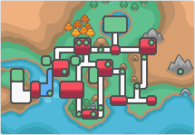

Región de Johto
La región de Johto es una de las regiones más destacadas en el mundo Pokémon. Se encuentra al oeste de la región de Kanto y se caracteriza por su geografía variada, que incluye montañas, bosques, ríos, costas y llanuras. Johto está habitada por una serie de ciudades y pueblos, cada uno con su propio diseño único y personajes interesantes.
La región también alberga una serie de gimnasios Pokémon, donde los entrenadores pueden desafiar a líderes de gimnasio especializados en diferentes tipos de Pokémon. Después de derrotar a estos líderes, los entrenadores obtienen medallas que les permiten enfrentarse a la Liga Pokémon, ubicada en el Monte Plateado.
Pueblos de Johto
- Pueblo Primavera
- Ciudad Cerezo
- Ciudad Malva
- Pueblo Azalea
- Ciudad Trigal
- Pueblo Caoba
- Ciudad Olivo
- Ciudad Orquídea
- Pueblo Arena
- Ciudad Iris
- Ciudad Endrino
